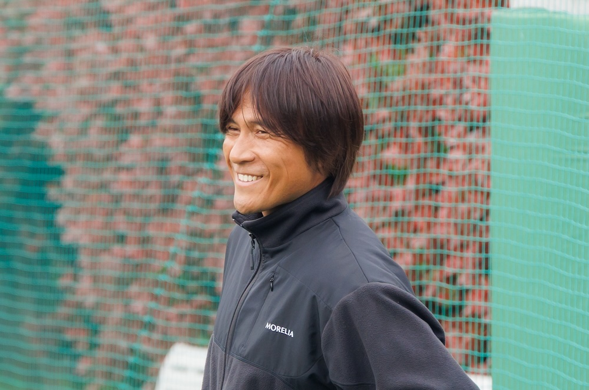
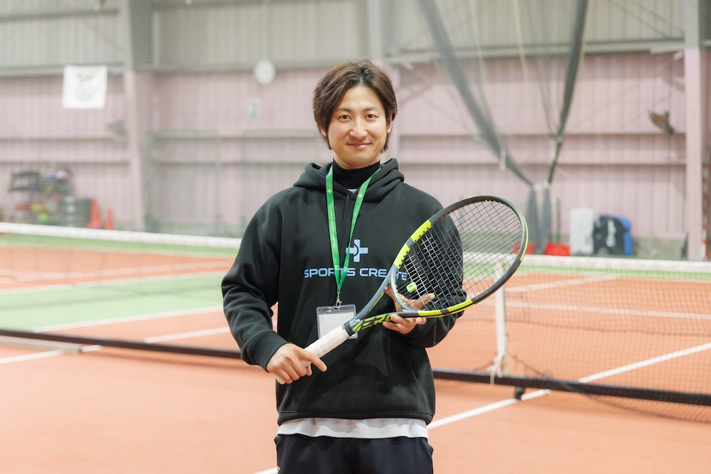
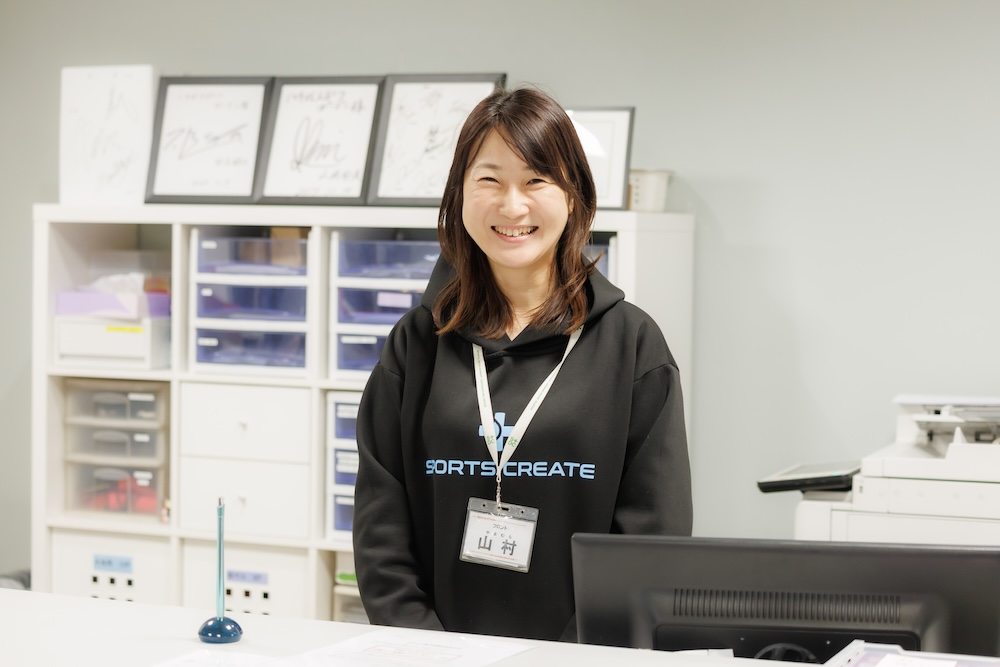
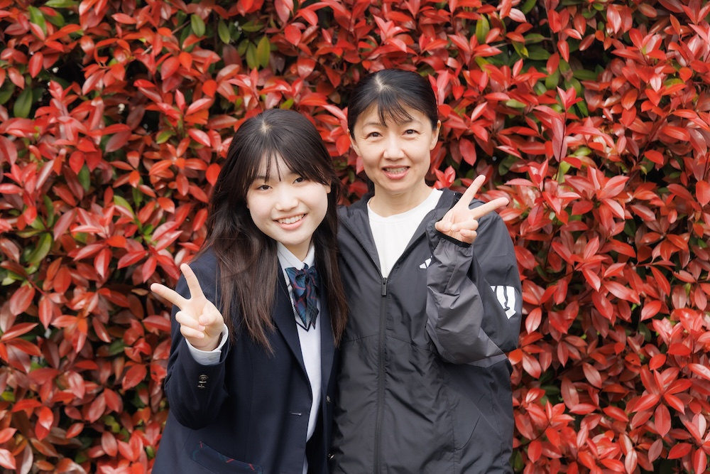
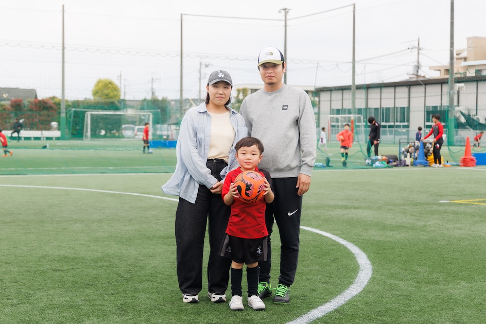
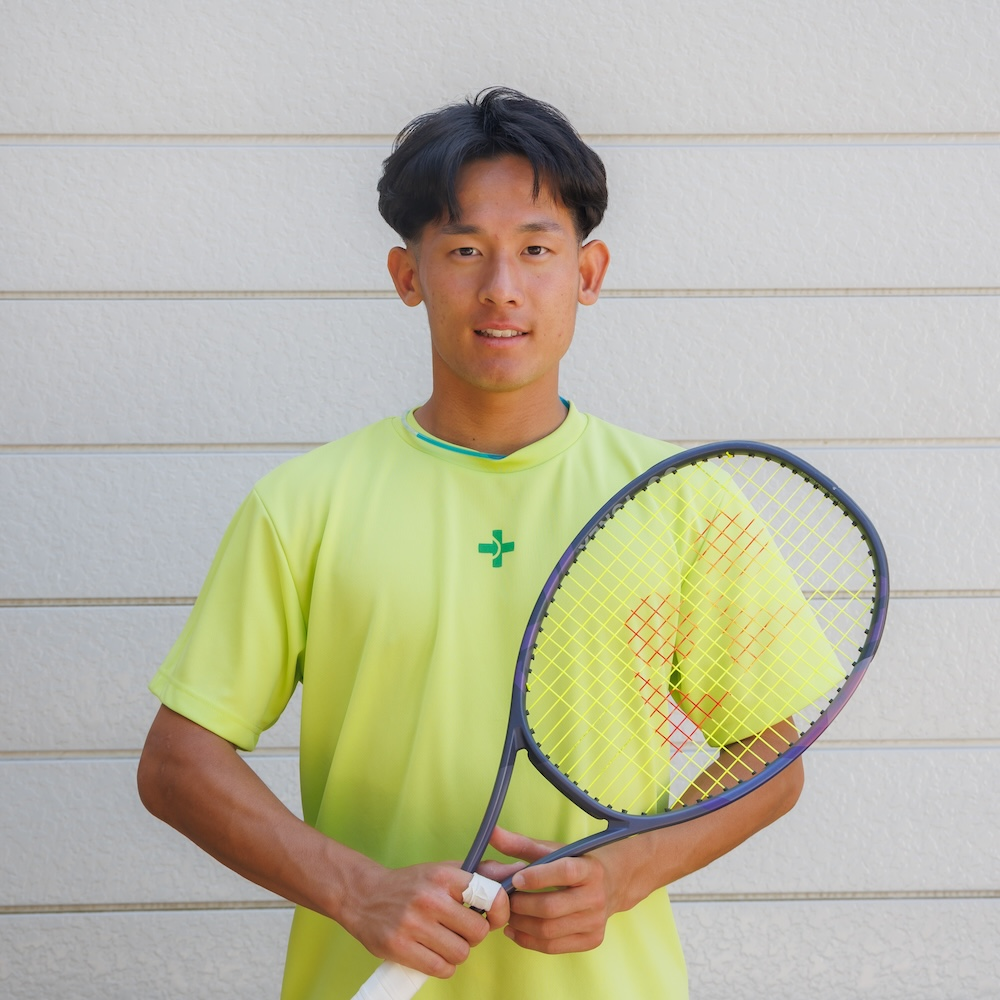
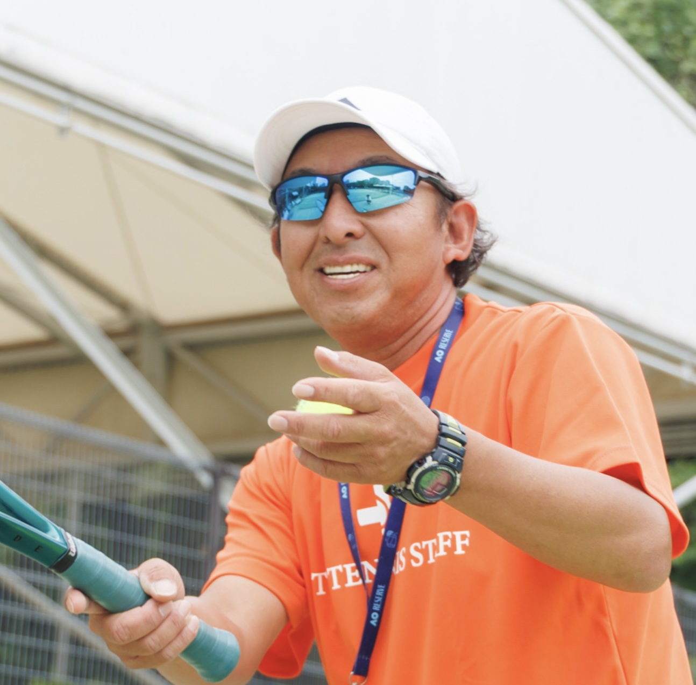

📍 竹の塚インドアスポーツプラザ
📸 施設・インタビュー写真を見る (Google Photos)💡 施設横断キーインサイト
- 「アットホーム」は偶然ではなく仕組み — フロントが拾った声をコーチ・スタッフと共有し、次回来館時に声掛け。ベテランスタッフの長期在籍と自然な心配りが支えている（秋場・高橋）
- 物販は「コーチの使用感 → 口コミ」が動力 — チラシやポップでは動かない。コーチが使い、お客さんが口コミで広げる流れが3名共通の指摘（菅谷・秋場・高橋）
- 写真サービスは全方位で好感触 — コーチは「ビフォーアフター動画」、会員は「実際の写真を見て欲しくなった」、フロントは「遺影撮ってほしい」という生の声を紹介
- 振替の取りづらさ・駐車場が共通不満 — 会員・フロント双方から同じ声。施設のハード面の制約が顕在化している
- テニスが「人を変える」エピソードが豊富 — 人見知りの女性が笑顔に（秋場）、介護疲れの会員がリフレッシュ（菅谷）、怖いコーチが変わってお客さん殺到（高橋）
- 保護者の待機時間に潜在ニーズ — 子供のレッスン中に親も何かできれば。フロント発の改善提案（秋場）
インタビュー一覧

テニス歴32年。体育会系の「怖いコーチ」から会員に寄り添うスタイルへ転換し、施設の中心に。映像活用・撮影イベントなど新規事業に積極的。中国系会員の増加や会員の7割が上達志向という現場データも。

元会員から20年勤務のベテランフロントへ。おむつの頃から社会人まで見守った成長のストーリー。フロントの「橋渡し」機能がアットホーム感の鍵。保護者の待機時間活用を自ら提案。

中学でテニスを始め、結婚・出産を経て復帰。介護疲れの中で施設が心の支えに。写真サービスに「実物を見て欲しくなった」と即反応。コーチのおすすめが物販の鍵という重要インサイト。
💡 施設横断キーインサイト
- カーペットコートはシニアの身体寿命を延ばす — オムニコートで足がパンパンになっていたシニアが「ここに来てヒアルロン酸の間隔が延びた」と絶賛。シニア層のLTV最大化の鍵。
- 「遺影写真」は笑い話ではなく切実な需要 — かしこまった写真館ではなく、大好きなテニスをして笑顔で動いている自然な生前写真・お孫さんとの写真には予算を惜しまない。
- 文化教室より「痛みに合わせた体のメンテ」 — 汎用的な教養教室よりも、テニスを長く続けるためのテーラーメイドなウォーミングアップやピラティス要素が切実に求められている。
- ジュニアの親を掴む「インドア」の絶大な安心機能 — 山口さん（熱中症回避）、赤塚さん（喘息回避）ともにインドアの気候遮断機能が圧倒的な選定理由。技術より「健康・安全な居場所」としての価値が口コミ（紹介率93%）の源泉。
- 写真サービスは「イベントでの付加価値」への転換が急務 — テニスはサッカー等と異なり写真を単体で買う文化が薄い。石川施設長の提案通り「少人数イベントにお土産として込みにする」ことで初めて高利益ビジネスとして着地する。
- 「超性善説」が支える強固なコミュニティ — 現場スタッフから経営陣に至るまで「相手を信じる・勘違いから紐解く」コミュニケーションが徹底されており、それがスタッフの定着と顧客満足度（誰も辞めたいと言わない）に繋がっている。
インタビュー一覧

西友時代からの古参会員。ご主人が定年後に夫婦で通い始め週2回のテニスが生活の軸に。カーペットコートの怪我防止効果を絶賛。「遺影代わりに使える自然な写真」や「怪我予防の体のケア」への強いニーズが判明。

元々サッカークラブだったが人数減少でテニスに転向。親としては「長く続けられる生涯スポーツ」に期待する反面、部活のない中学生にとって「週1回50分」では物足りないという上位層のジレンマも。インドアによる熱中症回避の安心感は絶大。

喘息持ちでインドア派の息子が、3年間一度も休みたいと言わず「熱が出ても行きたい」と熱中。冷気による発作の心配がないインドア環境の恩恵を強く感じている。マイペースだった我が子に「勝ちたい」意欲が芽生えるなど精神的成長に感謝。

「超・性善説」でスタッフを導き、離職を防ぎ顧客満足度の高い組織を牽引。ジュニアの紹介入会93%という圧倒的なコミュニティを持つ一方、教育都市特有の「多数の習い事の1つ」という壁を感じる。写真サービスはイベント等の付加価値としての導入を逆提案。

強豪大学で「勝負の世界」に疲れ、一度はテニスから離れた4児の母。結婚・子育て・看護の仕事を経て復帰したコートで出会ったのは、勝つためだけではない「楽しむテニス」。今はまず自分が楽しむ姿を見せることを大切にする、自然体のコーチ。会報誌・Web向け人柄紹介記事。
📍 八千代スポーツガーデン
📸 施設・インタビュー写真を見る (Google Photos)💡 施設横断キーインサイト
- テニス部門は現在「非常に好調」——基本の徹底が土台 — スプリットステップ・掃除・接客など全員が基本を継続することが集客好調の要因と菊地サブマネージャーは分析。スタッフ間の仲の良さも強み。
- ファミリー層が主要チャネル——親子イベント・複合受講に伸びしろ — 「ファミリーでやっているのが八千代は非常に多い」（菊地）。テニス×サッカーの掛け持ちはまだ少なく、複合施設の相乗効果を引き出すことが鈴木施設長の課題。
- 週次報告が手作業集計4票→メール送信という業務負荷 — 人数報告書・休会管理簿・退会管理簿・クラス入り人数表を毎週手動で集計。サービスエースからの自動連携でそのまま解消できる見込みで、DX施策へ期待が高い（鈴木）。
- 写真販売は「サッカー合宿・試合の特別な場面」に潜在ニーズ — 日常レッスンは親がスマホで撮れるため過去の販売は不発。宿舎内や試合中など親が入れない場面に絞ることで商機がある（鈴木）。
- コーチ・スタッフの「可視化コンテンツ」への強い共感 — 施設長・サブマネージャー双方が「スタッフのストーリーをもっと外に出したい」と語り、会報誌やウェブでのインタビュー企画を積極的に歓迎。
- シルバークラス新設を秋以降に計画 — 冷暖房なしのため夏は難しいが、10〜11月の開設を目標に病院・公共施設へのチラシ配布を計画。「テニスは全スポーツ中で健康寿命が最も長い」を訴求ポイントに（菊地）。
インタビュー一覧

順天堂大学サッカー部出身。金田前社長の声がけで川越のサッカースクール立ち上げに関わったことがキャリアの原点。「人としてちゃんとしてないとサッカーは上手くならない」という恩師の言葉を今も指導哲学に。テニス×サッカー×フットサルの複合施設を統括。DX・写真販売・物販に前向き。

中高のゆるいテニス部経験と3年のブランクを経てコーチ業に飛び込んだ異色の経歴。コミュニケーション能力で現場を切り開き、テニス部門の好調を牽引。実業団出場でコンプレックスを克服。SNS・AI解析・シルバークラス新設など次の展開も視野に。

元幼稚園教諭。八千代スポーツガーデンのオープン時に入社し、産休を2度挟みながら約20年勤務。会員との深い信頼関係と、子供から大人まで幅広い層の成長を見届けるやりがいを語った。

娘が大坂なおみ選手に憧れて小4で入会し6年継続。お母さんは「球拾い担当」の悔しさから娘に内緒でスクールに通い始め、今では週5の受け放題ユーザーに。親子で同じクラスを受講するほどテニスを通じた家族の絆が深まったケース。

サッカー一家の父親は大学時代にNPO法人で幼児向けコーチを務めた経験を持つ。息子の倫太郎くん（年長）をイオンでの体験がきっかけに入会させ約2年。週2回に増やしてドリブルの上達や社交性の成長を実感。施設・コーチへの満足度が非常に高い。
八千代の強みである「テニス×サッカーの相乗効果」を伝えるための、サッカースクール保護者向けトークスクリプト（2〜3分）。サッカー（みんなで動く力）とテニス（一人で考えて動く力）の掛け合わせを提案。
📍 4/16 実業団合宿
📸 合宿・インタビュー写真を見る (Google Photos)インタビュー・レポート一覧

鹿児島から単身上京し、テニスと陸上の二刀流からテニス一本へ。競技実績ゼロからDMで練習相手を探し、実業団入りを果たした異色の経歴。高い分析力とエンターテイナー精神を持ち、現場での直接交流を重視する。

横浜出身、小1からテニス一筋。圧倒的な練習量と継続力を武器に、SNS発信（Instagram月間100万閲覧）で広く認知を広げるデジタル時代のプロ選手。仲間からの応援を糧に、孤独な挑戦を続ける。
2人の対照的な選手のインタビューから得られた知見を統合。アスリート社員を「経営に貢献する仲間」と再定義し、ブランド価値向上と自走する応援文化の構築に向けた5段階の活用戦略を提示する。
日本の実業団・アスリート社員制度の現状を徹底リサーチ。大企業のブランディングから中小企業の成功事例まで、SDCがテニススクール業界で先行者利益を得るための戦略的示唆をまとめた専門レポート。
📍 ITC六甲
📸 施設・インタビュー写真を見る (Google Photos)💡 施設横断キーインサイト
- 「フロントの空気感」が会員増の最大要因 — マネージャーの寺田さんが「要因ははっきりわかっている」と断言。スタッフ全員の受け入れ体制が群を抜いており、外向きの接客・コミュニケーション力が集客を牽引している
- コーチの公平性・適度な距離感が他スクールとの差別化 — 会員の泉さんが以前のスクールとの違いとして最も評価した点。「えこひいきで上がる雰囲気がない」「コーチ同士で話し合って評価してくれる」ことが安心して通える理由（泉）
- ピラティスは好調だがテニスとのクロスセルは未開拓 — マシンピラティスの集客は順調だが「テニス会員とのコラボレーションはない」（寺田）。泉さんも「友達に誘われたらやる」と関心はあり、口コミ型のきっかけ作りが鍵
- 写真サービスは「記念品化」が差別化のヒント — 寺田さんから「絵画風・イラスト風でフォトフレームに入れて飾れるもの」という具体的提案。撮影だけでなく「その先のどう使われるか」まで一気通貫で商品化するアイデア
- アキレス腱断裂でも復帰——テニスへの強い愛着 — 泉さんはレッスン中にアキレス腱を断裂し救急車で搬送。半年のリハビリを経て復帰。多くが辞める中で「またテニスしたい」と戻ってきた、施設への深い愛着の証
- 外国人対応が新たな成長エンジン — 六甲アイランドの立地柄、多国籍の方が来館。フロント・コーチが翻訳アプリを活用しながら柔軟に対応。多言語案内システムへのニーズあり（寺田）
インタビュー一覧

ご主人のテニスがきっかけで入会し、娘さん（中1・週3）と家族3人で通うテニス一家。レッスン中にアキレス腱を断裂するも、半年のリハビリを経て復帰。コーチの公平な評価と適度な距離感をITC六甲の最大の魅力と語る。秋のチャンピオンシップ出場を目標に掲げる。

大学中退でITCに入社し、12施設を渡り歩いた30年選手。人見知りでシステマチックな性格ながら、コートに立つと別人に。「フロントの空気感」がITC六甲の会員増の要因と分析。写真サービスには「フォトフレームに入れて飾れる記念品化」を提案。全豪オープンツアー担当にビクビクしつつ奮闘中。
📊 ビジネスアイデアへの見解まとめ
📸 会員さんの写真撮影
◎ 最も好感触。ただし「売り方」が成否を分ける
- イベント込み込み方式が最適解 — 石川施設長が提案した「少人数イベントに写真代をコミコミにして単価UP、お土産として渡す」が全施設で最も現実的。単品売りは文化が薄く過去に不発（鈴木施設長）。
- シニア層の「生前写真」需要は本物 — 和田ご夫妻が「テニスをして笑顔で動いている自然な写真」「お孫さんとの写真なら超ウェルカム、自分たちでお金を出す」と即反応。竹の塚の秋場さんも「遺影撮ってほしい」という会員の声を紹介。
- 「親が入れない場面」に最大の商機 — 鈴木施設長の分析通り、日常レッスンはスマホで撮れるが、サッカー合宿の宿舎内・試合のピッチ上など親がアクセスできない瞬間に潜在ニーズ集中。木村ママは「自分の子が映ってるの全部買う、何十枚レベル」。
- プライバシー配慮が前提条件 — 石川施設長「写真が公開されるのは女性は嫌。自分だけが見られるなら」、山口ご夫妻も公開には慎重。閲覧を本人限定にする仕組みが必須。
推奨アクション: 保護者の「お子さんの写真が欲しい」ニーズは非常に強い。まず写真販売SaaSを契約し、衣笠がカメラマンとして直近のイベント撮影にテストトライする。ただし過去に実施して売れなかった事例があるため、その原因を事前に確認しておくことが必要。年配の方は「撮られたい人」と「撮られたくない人」がはっきり分かれるため、テスト的にイベントへカメラマンを派遣するか、撮影イベント自体を小規模で開催する形で検証。第一歩として、直近で良さそうなイベントにカメラマンとして入り、写真販売を小さく試す。
📷 保護者へのカメラ講座
△ 単独講座としてのニーズは低い。形を変える必要あり
- 「学びたい」より「撮ってもらいたい」が本音 — 木村ママ「写真スクール…そこまでは」、木村パパも「面白そうなのか、そこまではっていう」と距離感。保護者は自分で上手く撮る技術を身につけたいのではなく、プロに撮ってほしいというのが大勢。
- 待機時間活用としての可能性は残る — 高橋コーチ「お子さん持ってる保護者の方とか絶対興味あると思います」と肯定。ただし秋場さんの指摘通り、フロント1人体制の時間帯がありオペレーション面で制約。
現時点の判断: 単独では「今すぐやってみたい」という声が聞けず、「そこまでは…」という反応が実態。上手な人に撮ってもらって写真を分けてもらう方が保護者の本音に近い。あくまでニーズ確認に留まり、「お子さんを上手く撮りませんか？」といったリスト取りなど今すぐ有効なサービスは思い浮かばない。写真教室のライト版ができた段階であらためて検討。優先度は低い。
🏥 シニアへの健康サポート
◎ 最も切実なニーズ。「テニスを長く続けるため」の文脈が鍵
- 汎用ケアより「テーラーメイドのメンテナンス」 — 和田ご夫妻が最優先に挙げたのは「痛いところを聞いて、その人に合わせた準備運動やケアのアドバイス」。ばね指・肉離れ・膝の痛みなど具体的な不具合を抱えながらテニスを続けたいシニアの切実さが浮き彫りに。
- カーペットコートは「医療費を減らす」レベルのインフラ — 和田さん「膝へのヒアルロン酸注射の間隔がすごく長くなった」。足腰への負担軽減は実測可能なエビデンスとして訴求力がある。
- 「テニスは健康寿命が最も長いスポーツ」が訴求ポイント — 菊地コーチが秋以降のシルバークラス新設を計画中。病院・公共施設へのチラシ配布で「少しでも体がしんどい方の受け皿に」と語る。集客チャネルとして医療機関連携は有効。
- テニスが心身の支えとなっている実例が豊富 — 菅谷さんの介護疲れのリフレッシュ、山田さん（50代過ぎ）の「周りの友達より動ける」実感など。健康効果のストーリーはマーケティング素材としても強力。
- 菊地SMの現場提言:「小さいメガロス」構想 — 「端的に言うとメガロスみたいなものが欲しいってこと」と本質を突いた上で、現施設の規模では難しいため「小さいスタジオを鏡張りで作れば7〜8人一気にできる。レッスン前10分組と後10分組で回せる」と具体的な運用イメージを提示。レッスン料に数千円の付加価値をつける想定。ただし「人がいないとダレる。映像だけだと結局喋って終わる。予防ケアはテニスと違ってモチベーションが上がりづらい」とし、トレーナー常駐が不可欠との見方。
推奨アクション: ニーズは非常に強く可能性は高いが、現時点では「今すぐ痛みがある」状態ではなく予防の側面が強い。いかにも「予防」という見せ方にならない工夫が必要で、ピラティスやピラティスに通っている層のニーズあたりが攻めポイントになり得る。実際の運用には外部トレーナーの確保など準備が必要なため、プランをしっかり練り上げてから動く。菊地SMの「小さいメガロス」構想は、スモールスタートで需要を数値化した後の本格投資フェーズとして検討。
🛍 物販アイデア
○ ニーズは確実にある。「コーチの推薦」が唯一の動力源
- POPやチラシでは動かない。「コーチが使ってる」が全て — 3施設共通の指摘。菊地SMがインソールを自分で買い、山上コーチ・フロントの成山さんと3人が「実際にいい」と勧めた結果、前年比2〜3倍の売上に。さらに「買いたい人がまだいたのに販売期間が短くて終わってしまった」と機会損失も発生。菅谷さん「コーチのおすすめなら買う」、和田さん「痛いところを聞いてコーチがこれをとアドバイスすれば絶対喜ぶ」。
- 「体のプロが薦める」というポジションの優位性 — 小野さん「Amazonでも買えるけど、体のことを分かってるプロがおすすめしてくれるとありがたい」。テニスコーチの信頼 × 身体知識が、ECにはない購買動機を生む。
- オペレーション上の壁が最大の課題 — 鈴木施設長「コーチのレッスンが詰まっていて会員への声がけ時間がない」、秋場さん「フロント前を通らない動線で気づかれない」。仕組みとしてコーチが自然に紹介できる接点を設計する必要あり。
- 軽食・補給食にも隠れたニーズ — 山田さん親子「ウイダーインゼリーとかプロテインバーとか軽く食べれるもの置いてほしい」。レッスン前後の補給ニーズはシンプルで回転率も高い。
- 「商品理解の機会」が熱意の源泉 — 菊地SM「自分がいいと心から思えないと勧めづらいが、体験させてもらうとかZoomでも説明会を開くとか、商品をちゃんと理解できる機会があると熱意を持って勧められる」。コーチに売らせるのではなく、まずコーチ自身が体験・納得する機会を本部が設計することが成功の前提条件。
推奨アクション: まず「コーチがおすすめする」ことを習慣化・体系化する。具体的なアイテムがあれば、それを題材に「コーチのおすすめ感」をいかに出せるかの取り組みを設計。新商品導入時は必ずコーチ向け体験会・説明会を先行実施し、販売期間も十分に確保する。また、お子さんやお腹が空きやすい方向けに、体にも良く晩御飯にももたれないちょっとした補給食（ウィダーinゼリーなど保管が効き在庫になりにくいもの）の棚設置はローリスクで即実行可能。
🎓 文化教室・AI講座
△ 汎用的な文化教室は優先度低。テニス関連のメンテ系が先
- 「テニスに来てるのに売りつけられる」リスク — 小野さんが過去のハンドマッサージ体験を例に、会員から「フロントに寄りづらくなった」という反感があったことを証言。テニスとの関連が薄い講座は場の空気を壊す恐れ。
- テニス前ヨガ・ストレッチは歓迎 — 小野さん「テニスの前にヨガやったら全然違う。ここだったらみんな知ってるし」と強く推奨。テニスのパフォーマンス向上に直結する内容なら自然に受け入れられる。
- AI講座は「未知だが種はある」段階 — 高橋コーチ「何でもやりたい」と前向き、秋場さん「自分がまず教室に入りたい」と個人的関心、小野さん「はじめてのAI教室みたいなのいいかもしれない」。関心はあるが具体的なニーズとして結晶化していない。
- スペースと人員の制約 — 秋場さん「フロント1人の時間帯に案内できるか」というオペレーション懸念。外部講師に委託し、施設はスペース貸しに徹する形が現実的（秋場さん提案）。
現時点の判断: 後回し。汎用的な文化教室（ハンドマッサージなど）は「スポーツ」「体」という文脈から外れると会員に違和感が出る。しっかりとテーマ設定を行った上で進めるべきで、テニス直結型（レッスン前ヨガ・コンディショニング）があるならそちらが先。AI講座についても、具体的ニーズが結晶化していない段階では種まきに留まる。
💻 施設へのDX支援
◎ 現場の業務負荷が具体的。即効性が高い
- 週次レポート自動化が最優先 — 鈴木施設長が具体的に列挙した「人数報告書・休会管理簿・退会管理簿・クラス入り人数表」の4帳票は毎週手作業で集計→メール送信。「サービスエースからデータを自動で取れれば全部賄える」と即効性を確信。菊地SMもExcelマクロでの自動化をAIで試みたが「結局動かなかった」と語り、現場が自力で解決できない技術的ボトルネックが明確に存在する。
- 映像活用DXへの強い期待 — 高橋コーチが熱望する3つの施策:①会員のプレー動画によるビフォーアフター、②リモートでのコーチング（カメラ越しにアドバイス）、③全自動球出しマシンとの連携。石川施設長も「定点録画のアーカイブを自分のIDで見られる仕組み」を構想。菊地SMはさらに踏み込み、ゴルフ業界のシミュレーションスタジオをモデルに「AIで映像を解析し、サーブの角度をジョコビッチやアルカラスと数値比較。事実を出した上でコーチが感覚的にフォローする」構想を以前から持っており、「数字は絶対変わらないから説得力がある。テニス業界はここがすごく遅れている」と確信している。
- 複合施設の相乗効果をデータで可視化 — 八千代はテニス×サッカー×フットサルの複合施設だが「掛け持ちがまだ少ない」（鈴木施設長）。会員の受講パターン分析から複合受講の促進施策を導き出せる。
- DXが物販・写真・健康サポートの基盤にもなる — コーチが声がけする時間がないという物販の課題も、レッスン管理の効率化で間接的に解消。会員データの整備は全施策の土台。
推奨アクション: サービスエース連携における各施設の作業負荷が非常に高いことが改めて確認できた。週次レポート自動化を最優先で着手する。映像活用についてはどこよりも先駆けてやっていきたいが、現時点では具体的なネタがないため、まずは調査フェーズとして既存サービス・技術の情報収集から始める。
🎯 総合優先度
| 施策 | 現場ニーズ | 実現容易性 | 収益インパクト | 優先度 |
|---|---|---|---|---|
| 💻 DX支援（レポート自動化） | ★★★ | ★★★ | ★★（コスト削減） | 最優先 |
| 📸 写真撮影（SaaS＋テスト撮影） | ★★★ | ★★★ | ★★ | 最優先 |
| 🏥 シニア健康サポート | ★★★ | ★★ | ★★★ | 高（要プラン策定） |
| 🛍 物販（コーチ推薦型） | ★★ | ★★★ | ★★ | 高 |
| 🎓 文化教室・AI講座 | ★ | ★★ | ★ | 後回し（テーマ設定次第） |
| 📷 カメラ講座 | ★ | ★★ | ★ | 低（ニーズ確認止まり） |